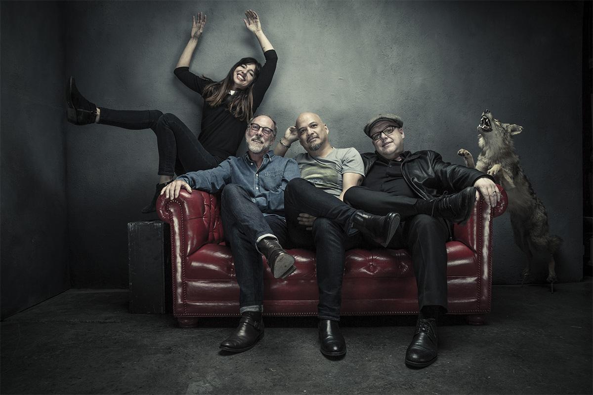
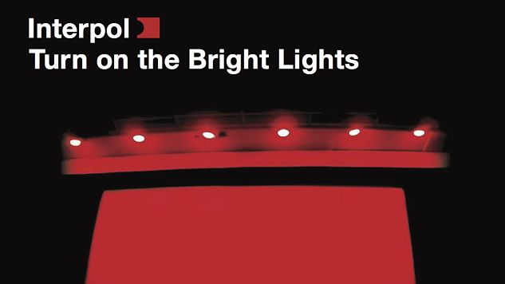

Music News
Pixies announce 2017 US tour
Pixies have announced a US tour in support of their latest album ‘Head Carrier’. The band will kick off the tour in Pomona, California on April 21, going on to play 20 dates across the country including stops in Austin, Atlanta, New York, and Washington D.C. See below for a full list of dates.
The supporting acts will be Public Access TV and Cymbals Eat Guitars. Last year, Pixies released their sixth studio album ‘Head Carrier’. NME’s Mark Beaumont awarded the album four stars, writing: “casting aside the boulder of history, you’ll struggle to find a better collection of indie rock songs this year. The reunion of the century keeps on kicking.” Read the full review.
The Boston rockers are also planning to return to the UK later this year, supporting Kings of Leon at their headline show at London’s Hyde Park as part of British Summer Time 2017.
For tour dates: pixiesmusic
Interpol Announce Tour for 15th Anniversary of Turn on the Bright Lights
This summer will mark the 15th anniversary of Interpol’s acclaimed debut Turn on the Bright Lights, and to celebrate, the influential New York rockers will be heading out on a European tour where they’ll be performing the album in full.
The band returned from a brief hiatus in 2014 with their album El Pintor, their first release after the departure of bassist Carlos Dengler in 2010. Singer and guitarist Paul Banks also released the collaborative album Anything But Words with Wu-Tang Clan’s RZA last year under the name Banks & Steelz.
In addition to the anniversary tour, the band have revealed that they are currently working on El Pintor’s follow-up, their sixth studio album, which they’ve slated for a 2018 release. Interpol have promised that more dates are on the way, so we’ll keep our fingers crossed that that means they’ll be bringing this tour to the U.S., but for now, check out all of the European dates below. An exclusive fan pre-sale will go live here on Wednesday, Jan. 25 at 9 a.m. GMT (4 a.m. EST) and the general on-sale begins Friday, Jan. 27.
| Dates | Venue | Country |
|---|---|---|
| Aug 07 | LUCERNA MUSIC BAR | PRAGUE, CZECH REPUBLIC |
| Aug 10 | ARENA | VIENNA, AUSTRIA |
| Aug 12 | SUMMER WELL FESTIVAL | BUFTEA, ROMANIA |
| Aug 13 | KALEMEGDAN BELGRADE FORTRESS | BELGRADE, SERBIA |
| Aug 15 | SZIGET FESTIVAL | BUDAPEST, HUNGARY |
| Aug 16 | MUFFATHALLE | MUNICH , GERMANY |
| Aug 19 | DEN ATELIER | LUXEMBOURG, LUXEMBOURG |
| Aug 20 | LA ROUTE DU ROCK | ST. MALO, FRANCE |
| Aug 22 | AMA MUSIC FESTIVAL | ASOLO TV, ITALY |
| Aug 23 | CARROPONTE | SAN SESTO GIOVANNI, ITALY |
| Aug 25 | ZÜRICH OPENAIR | ZÜRICH, SWITZERLAND |